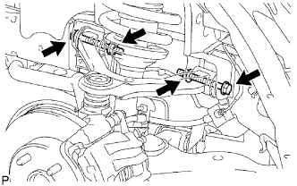

ĐÒN TREO TRÊN PHÍA TRƯỚC > LẮP |
| 1. LẮP TẠM THỜI ĐÒN TREO TRÊN TRƯỚC TRÁI |
|  |
Lắp tạm thời đòn treo trên bằng 2 bulông và 2 đai ốc.
Lắp đòn treo trên vào cầu trước bằng đai ốc xẻ rãnh.
Lắp kẹp mới.
| 2. LẮP DÂY CẢM BIẾN ĐIỀU KHIỂN TRƯỢT |
Lắp dây điện cảm biến bằng 2 bu lông.
| 3. LẮP BÁNH TRƯỚC |
Lắp bánh trước.
| 4. ỔN ĐỊNH HỆ THỐNG TREO |
Hạ thấp xe.
Hãy nhún xe vài lần để ổn định hệ thống treo.
| 5. XIẾT CHẶT ĐÒN TREO TRÊN PHÍA TRƯỚC |
Xiết chặt 2 bu lông của đòn treo trên.
| 6. KIỂM TRA VÀ ĐIỀU CHỈNH GÓC ĐẶT BÁNH TRƯỚC |